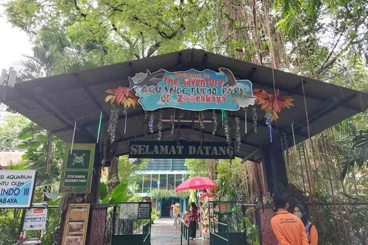
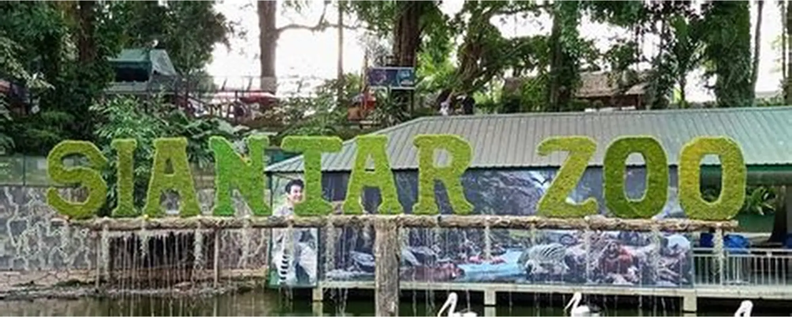
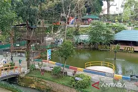
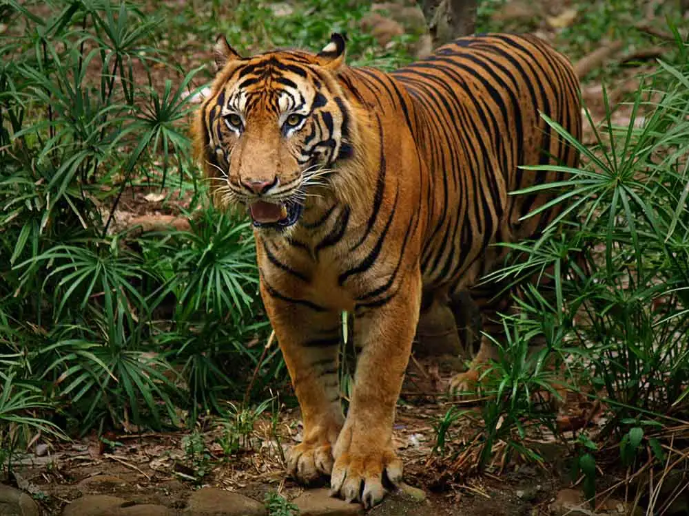
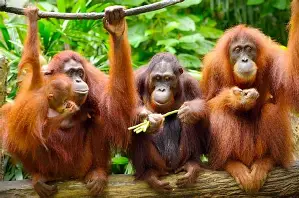
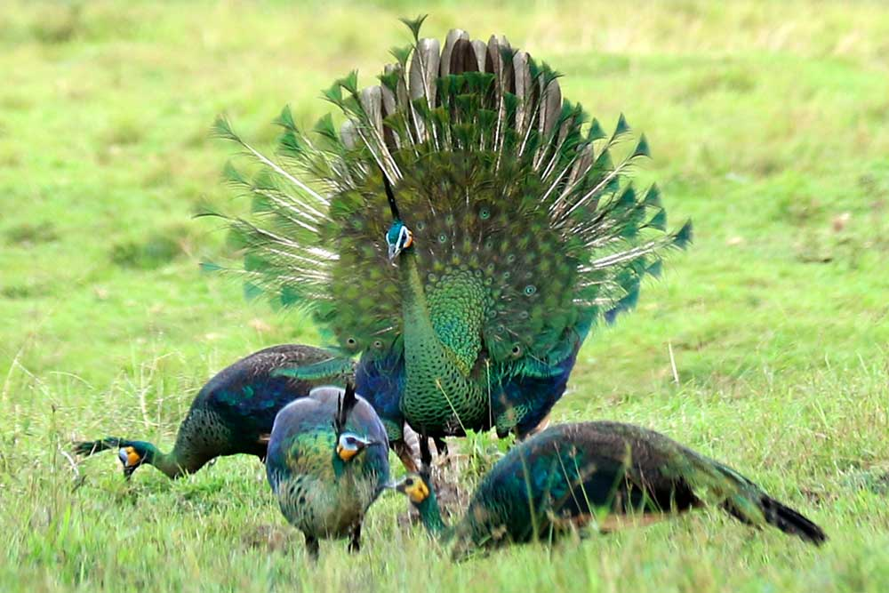
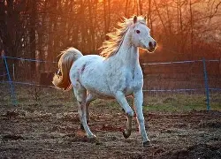
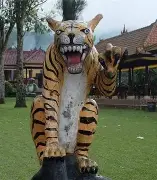
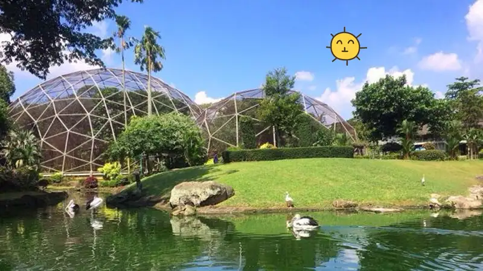
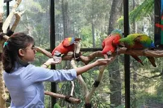

Jl. Gunung Simanuk-manuk, Kota Pematangsiantar, Sumatera Utara.
Buka di Google Maps →


aman Hewan Pematangsiantar, atau yang lebih dikenal sebagai Siantar Zoo, adalah kebun binatang yang memiliki sejarah panjang sejak dibuka pada 27 November 1936 oleh Dr. Conrad dari Belanda.
Saat ini, kebun binatang ini mencakup area seluas sekitar 4,5 hektar dan menampung ratusan ekor satwa dari hampir 200 spesies. Kebun binatang ini dikelola secara swasta dan menyediakan berbagai fasilitas edukasi dan rekreasi, seperti feeding satwa, pertunjukan, museum satwa, restoran, dan toko suvenir
Tujuan pendirian taman hewan ini adalah untuk konservasi satwa, pendidikan ekologis, serta menjadi destinasi wisata bagi masyarakat lokal maupun pengunjung dari luar kota.

Harimau Sumatera

Orangutan
Gajah

Burung Merak

Kuda

Patung Harimau
Gerbang Taman Hewan

Danau Mini

Taman Burung